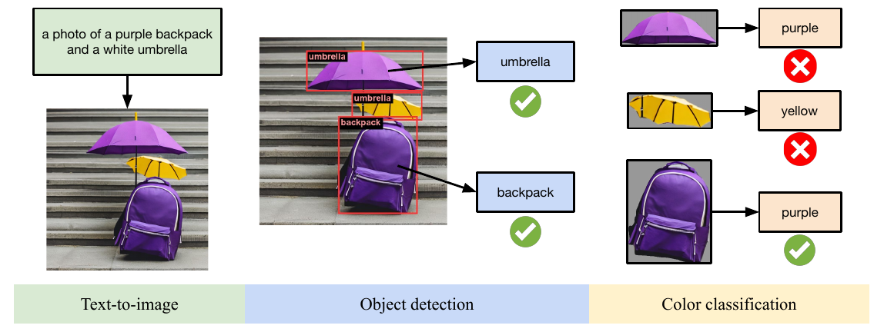

01
基础组合对齐 · 2023
GenEval
An Object-Focused Framework for Evaluating Text-to-Image Alignment
把 prompt 拆成可检测条件，用“所有条件是否同时满足”替代一个难解释的整体相似度。

论文 Figure 1 · object-focused evaluation pipeline- 553
- 模板 prompts
- 6
- 组合任务
- 6,000
- 人类标注
- 83%
- 与人判断一致
01为什么要做
人评昂贵且难以扩展；FID 只看图像分布质量、不看 prompt，CLIPScore 又把整张图与整段文本压成单一相似度。它们既难发现组合错误，也不能解释是对象缺失、数量错误、空间关系错误，还是属性绑定失败。
为什么需要新的评估方式
基础组合条件本身是离散且可验证的。GenEval 选择现成视觉模块逐项验收，让评分具备实例级诊断能力，并能随检测器或分类器升级而替换组件。
02统计量与能力轴
六类 prompt 数量依次为 80 / 99 / 80 / 94 / 100 / 100。对象来自 80 个 MS COCO 类别；使用 11 个基础颜色词；计数为 2–4；位置关系为上、下、左、右。
单对象双对象共现计数颜色2D 位置颜色属性绑定
它主要评估模型对短而明确的组合描述是否具备可控、精确、可复现的基础生成能力。
03指标、验证与重要信息
评分链：Mask2Former 检测与分割对象；计数任务提高检测阈值；bounding box 中心判断相对位置；掩去背景后用 CLIP ViT-L/14 做零样本颜色分类。单图只有在全部条件满足时记为 1，再按任务均值与六任务宏平均得到总分。
可信度：1,200 张图像获得 6,000 次标注，GenEval 与人类判断一致率 83%，人际一致率 88%；在人类全票一致的样本上达到 91%。论文当时最强模型在位置关系与属性绑定上也仅约 15% 和 35%，说明整体图像“看起来不错”会掩盖严重组合错误。